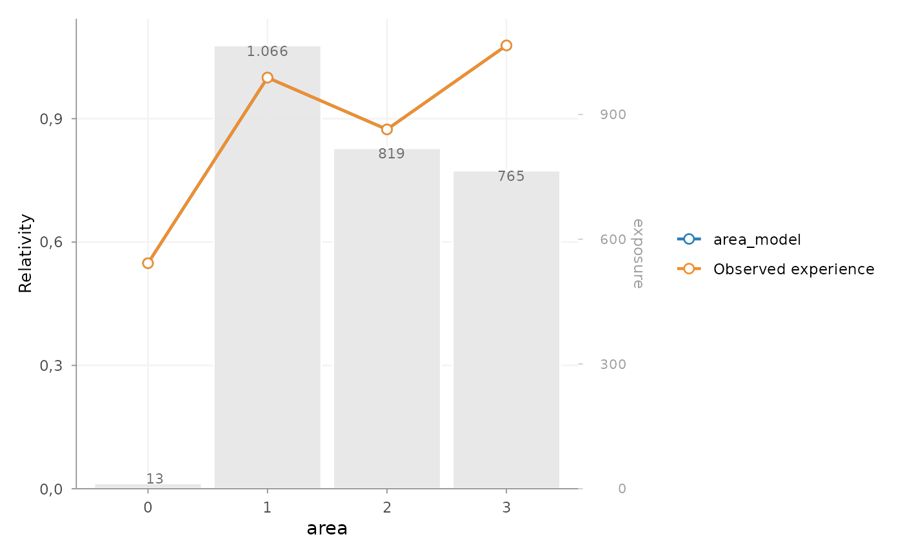
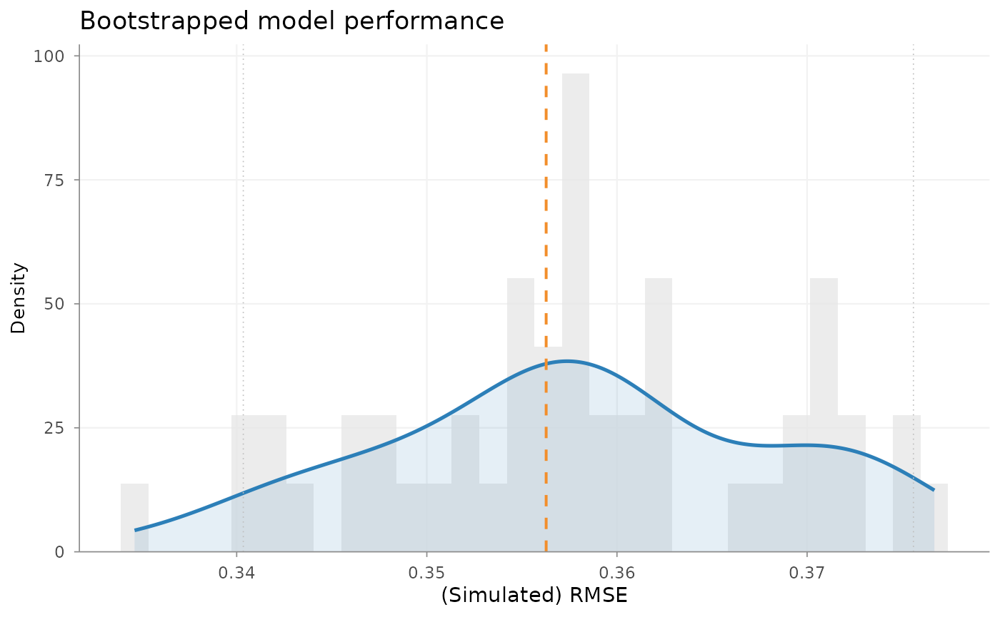
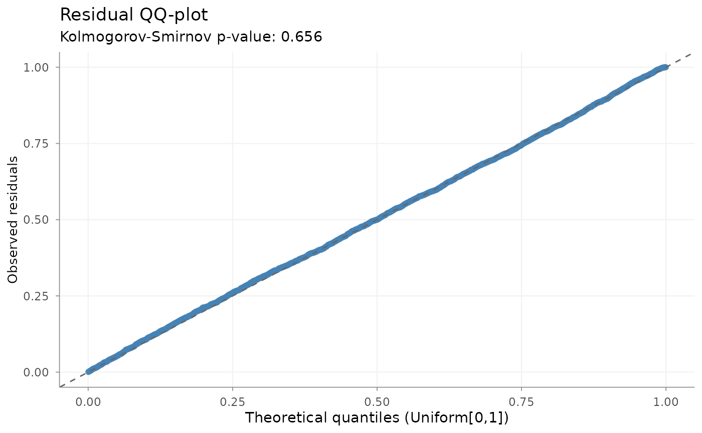

What does model validation mean?
Validation of an insurance pricing model is broader than comparing fit statistics. A model may describe the estimation data well while producing unstable, weakly supported or actuarially implausible tariff relativities. Conversely, a statistically detectable imperfection may have little practical pricing effect in the insured portfolio.
No single metric determines whether a model is adequate. A validation review normally combines several dimensions:
| Dimension | Practical question |
|---|---|
| Statistical adequacy | Are the model structure and distribution broadly consistent with the data? |
| Predictive performance | How well does the model predict the relevant outcome, preferably outside the estimation sample where appropriate? |
| Stability | How sensitive are estimates or performance to variation in the observed sample? |
| Tariff plausibility | Are the effects interpretable, credible and suitable for the intended tariff? |
| Portfolio behaviour | Where does expected experience differ systematically from observed experience? |
These dimensions are complementary rather than a mandatory sequence. Their relative importance depends on the response, portfolio, modelling objective and intended use of the tariff.
This vignette starts from fitted models. Getting Started provides the worked modelling example, while Pricing workflow and package building blocks maps validation within the wider package.
Validation map
The following functions support different validation questions. Not every model requires every diagnostic.
| Validation question | Typical tool |
|---|---|
| How do alternative fitted models compare? | model_performance() |
| Are tariff relativities plausible and sufficiently supported? | rating_table() |
| Does observed portfolio experience support the fitted pattern? | add_portfolio_experience() |
| How sensitive is measured performance to portfolio resampling? | bootstrap_performance() |
| Is a Poisson frequency model materially overdispersed? | check_overdispersion() |
| Do simulation-based residuals show remaining structure? | check_residuals() |
| Where does the model over- or under-predict? | exposure-aware observed-versus-expected review |
Compact example setup
The examples use two Poisson frequency models fitted to the same
records, response and exposure definition. expected_claims
from these models is the expected claim count for each observed policy
period, because the prediction includes its earned-exposure offset.
library(insurancerating)
portfolio <- as.data.frame(MTPL2)
portfolio$area <- factor(portfolio$area)
portfolio$area <- set_reference_level(portfolio$area, portfolio$exposure)
intercept_model <- glm(
nclaims ~ 1 + offset(log(exposure)),
family = poisson(),
data = portfolio
)
area_model <- glm(
nclaims ~ area + offset(log(exposure)),
family = poisson(),
data = portfolio
)The fitted model is starting material here; construction of frequency, severity and technical risk-premium models is covered elsewhere.
Comparing model performance
model_performance(intercept_model, area_model)
#> # Comparison of Model Performance Indices
#>
#> Model | AIC | BIC | RMSE
#> ----------------+----------+----------+------
#> intercept_model | 2284.056 | 2290.063 | 0.356
#> area_model | 2287.25 | 2311.275 | 0.356model_performance() reports AIC, BIC and response-scale
RMSE:
- AIC and BIC compare likelihood fit while penalising model complexity;
- RMSE summarises prediction error in the response unit and gives relatively high weight to large errors.
These values are most directly comparable when models use the same response, estimation records, weights and offsets, as they do here. The RMSE shown is calculated on the estimation data. It is therefore an in-sample description, not an estimate of performance on a future portfolio.
Lower values can support a model comparison, but a small improvement does not automatically imply a better tariff. Exposure by level, coefficient stability, residual behaviour, observed experience and practical interpretability remain part of the assessment.
Inspecting tariff structure and observed experience
rating_table() expresses fitted GLM effects as tariff
relativities and shows the exposure supporting each level. This makes
the statistical output easier to review in actuarial terms. Observed
experience can be attached to the same table for a direct graphical
comparison.
area_table <- rating_table(
area_model,
model_data = portfolio,
exposure = "exposure"
)
area_table
#> risk_factor level est_area_model exposure
#> 1 (Intercept) (Intercept) 0.1369930 NA
#> 2 area 0 0.5485629 13
#> 3 area 1 1.0000000 1066
#> 4 area 2 0.8739528 819
#> 5 area 3 1.0782596 765
area_review <- area_table |>
add_portfolio_experience(
data = portfolio,
claim_count = "nclaims",
exposure = "exposure",
metric = "frequency"
)
autoplot(
area_review,
risk_factors = "area",
metric = "frequency"
)
A model with slightly better aggregate fit can still be unattractive when it creates volatile neighbouring relativities, extreme effects supported by little exposure or shapes without a plausible risk interpretation. An extreme coefficient in a small segment should therefore not be interpreted in the same way as the same coefficient supported by a substantial share of the portfolio.
The model line shows conditional tariff relativities. The observed line shows unadjusted portfolio experience by area. They answer different questions and need not coincide exactly: observed experience also reflects differences in the mix of other risk characteristics. The comparison is useful for identifying levels that require further investigation, especially when interpreted with their exposure.
Assessing resampling stability
set.seed(123)
bootstrap_result <- bootstrap_performance(
area_model,
portfolio,
n_resamples = 50,
sample_fraction = 0.8,
sampling = "bootstrap",
show_progress = FALSE
)
autoplot(bootstrap_result)
With this specification, bootstrap_performance() samples
portfolio rows with replacement, refits the model and evaluates
response-scale RMSE on rows that were not selected for that replicate.
Its RMSE distribution describes how sensitive measured performance is to
repeated sampling from the observed portfolio.
This is a resampling-stability diagnostic. It is not independent validation on a genuinely later or external portfolio, and it does not capture all future claim, trend, mix or specification uncertainty. A narrow distribution indicates less sensitivity to the sampled records; a wide distribution may point to sparse segments or an unstable specification.
When prediction on unseen data is central to the objective, this
evidence should be complemented by a suitable holdout, cross-validation
or temporal validation design. With sample_fraction = 1,
the function instead evaluates on sampled training rows and should be
interpreted as in-sample stability.
Checking distributional assumptions
Overdispersion
dispersion_check <- check_overdispersion(area_model)
dispersion_check
#> Dispersion ratio = 1.220
#> Pearson's Chi-squared = 3655.711
#> p-value = < 0.001
#> Overdispersion detected.For a Poisson frequency GLM, the dispersion ratio is Pearson’s chi-squared statistic divided by the residual degrees of freedom. A value above one means that observed variation exceeds the variance implied by the Poisson model.
Both statistical evidence and practical magnitude matter. In a large insurance portfolio, a small departure can produce a very small p-value simply because many observations are available. The size of the dispersion ratio and its effect on uncertainty and tariff decisions are generally more informative than the p-value alone. Overdispersion can indicate omitted heterogeneity, clustering, unusual observations or model misspecification, but does not by itself identify the cause.
Simulation-based residuals
set.seed(123)
residual_check <- check_residuals(
area_model,
n_simulations = 250
)
autoplot(residual_check)
check_residuals() uses DHARMa simulations from the
fitted model to construct scaled residuals. The QQ plot and uniformity
test assess whether the observed response behaves consistently with the
distribution implied by that model.
Systematic departures can indicate remaining structure, distributional mismatch or unusual observations. The uniformity p-value is a diagnostic signal, not a stand-alone acceptance rule. Its interpretation should be combined with the location and shape of departures, fitted values, exposure and relevant risk-factor levels.
Reviewing observed versus expected experience
An observed-versus-expected review asks where the fitted model systematically over- or under-predicts the portfolio. The following example aggregates actual and expected claim counts by area.
validation_data <- portfolio
validation_data$expected_claims <- predict(
area_model,
newdata = validation_data,
type = "response"
)
area_oe <- rating_grid(
validation_data,
group_by = "area",
exposure = "exposure",
aggregate_cols = c("nclaims", "expected_claims")
)
area_oe$observed_frequency <-
area_oe$nclaims / area_oe$exposure
area_oe$expected_frequency <-
area_oe$expected_claims / area_oe$exposure
area_oe$observed_expected_ratio <- ifelse(
area_oe$expected_claims > 0,
area_oe$nclaims / area_oe$expected_claims,
NA_real_
)
area_oe
#> area nclaims expected_claims exposure observed_frequency expected_frequency
#> 1 1 146 146 1065.74795 0.13699299 0.13699299
#> 2 0 1 1 13.30685 0.07514927 0.07514927
#> 3 2 98 98 818.53973 0.11972540 0.11972540
#> 4 3 113 113 764.99178 0.14771401 0.14771401
#> observed_expected_ratio
#> 1 1
#> 2 1
#> 3 1
#> 4 1Because the model prediction includes earned exposure, summing
expected_claims gives the expected number of claims for
each area. Dividing observed and expected counts by aggregated exposure
gives the corresponding frequencies. A ratio above one indicates more
observed claims than expected; a ratio below one indicates fewer.
rating_grid() does not validate the model by itself. It
prepares a compact model-point or segment-level view by aggregating
additive portfolio quantities. Here it supports an O:E review; elsewhere
it is primarily used to reduce portfolios before modelling or
implementation. See Large Portfolios
for that role.
O:E differences should always be read with exposure and claim volume. A large ratio in a small segment may reflect limited experience, while a persistent deviation in a well-exposed segment can indicate missing structure or miscalibration. Similar reviews can be made by rating level, predicted-risk band, underwriting period or another segment relevant to the portfolio.
Validation, investigation and refinement
Validation identifies evidence; it should not silently alter the model. A useful response to an issue is:
- identify the affected observations or tariff levels;
- investigate the likely cause;
- revise the data or model when the statistical specification is responsible;
- apply an explicit actuarial refinement only when it has a defensible tariff rationale;
- validate the resulting model again.
Incorrect exposure, data-quality problems, missing interactions, poor segmentation, inappropriate distributions and large-loss treatment can all produce unattractive diagnostics. These issues may require revisiting the model rather than smoothing or restricting its coefficients. The Refinement building blocks vignette explains how justified tariff adjustments can be recorded and refitted explicitly.
Putting the evidence together
Validation should combine evidence rather than rank models on one metric. A model may have a slightly lower AIC but unstable coefficients, weak observed support and material residual structure. Such a model may be less suitable for tariff implementation than a more stable alternative.
Conversely, a statistically significant diagnostic result may have little practical effect when its magnitude is small and portfolio behaviour remains stable. The conclusion should reflect statistical adequacy, predictive evidence, sampling stability, exposure and credibility, actuarial plausibility and the intended pricing use.
Where to go next
- Getting Started constructs and interprets a pricing model in one worked example.
- Pricing workflow and package building blocks maps the complete package architecture.
- Refinement building blocks translates identified tariff issues into explicit, reviewable adjustments.
- Large Portfolios covers model-point aggregation and database-backed reduction.